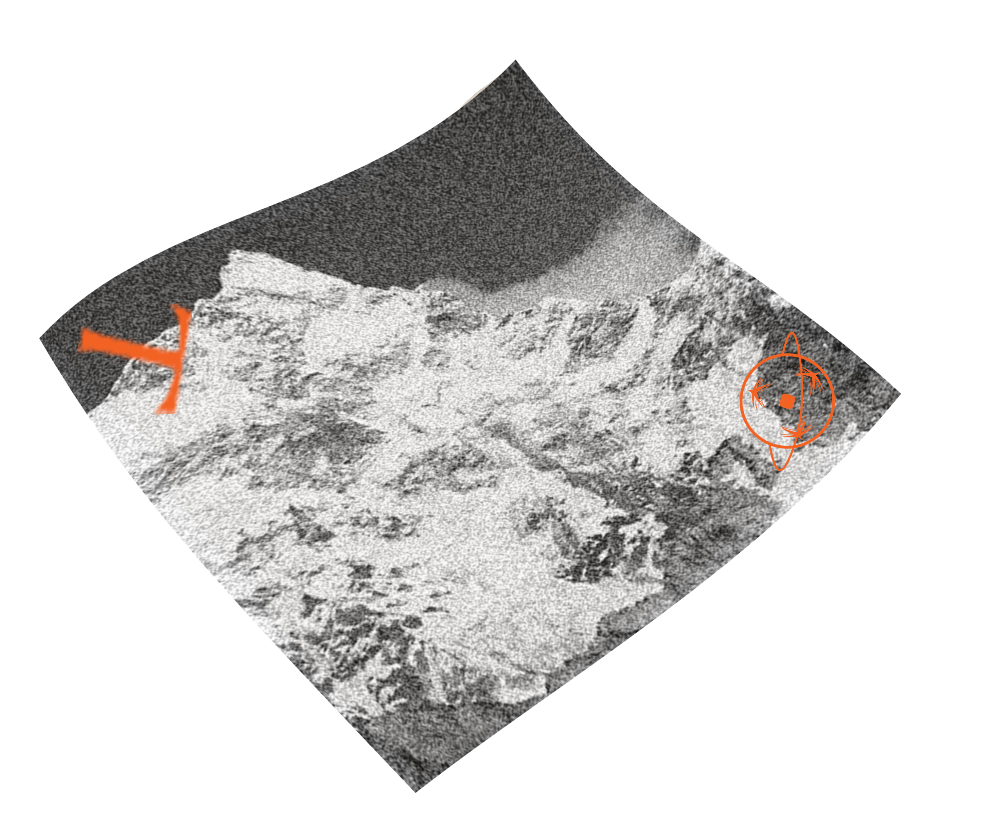

Blank is a global collective of cultural identity. Through collaborative virtual quilting and personalized scarves we discover new ways to connect to our roots. By exploring the strange world of in-between, where we are not quite one thing and only sort of another, a new place is found.